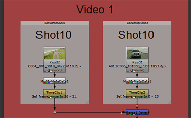
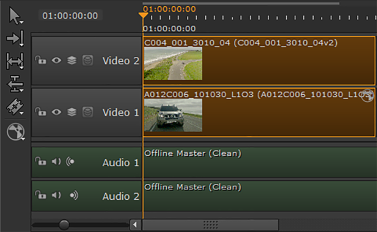
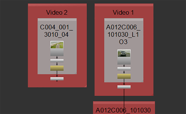
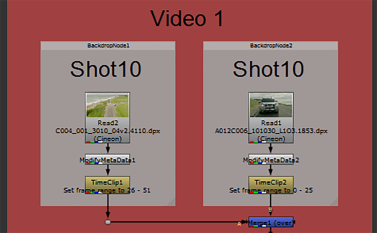

NOTE: Custom shot presets can only be selected from the Project Settings if they contain a Nuke Project File and Nuke Write Node Content preset.
| 1. | Click the Nuke Project File Content preset to display the script settings. |
| 2. | Select Write Nodes from the dropdown and check which path from the shot template should be used for the Nuke Write node. For example: |
{shot}/nuke/renders/{shot}_comp{_nameindex}_{version}.####.{ext} to resolve the render path where Nuke Studio expects to find the files when they're rendered.
NOTE: If you included a Nuke Annotations File Content preset, enable the Annotations Precomp creator. See Annotations for more information.
| 3. | If you're exporting retimed media, set how you want the Nuke script to handle the retime: |
• None - no retime is applied.
• Motion - vector interpolation is used to calculate the in between frames. This is the most accurate retime method, but takes longer to render.
• Frame - the nearest original frame is displayed.
• Blend - a mix between two frames is used for the in between frames. This is quick to render and is useful when tweaking the timing in the Curve Editor before setting the method to Motion.
| 4. | Soft Effects added to clip instances in your export are included in the resulting Nuke script by default. If you don't need the soft effects, disable Include Effects to omit them from the script. See Soft Effects for more information. |
| 5. | Select the required Reformatting options: |
• Plate Resolution - exports at the clip's original resolution, regardless of what is set in the timeline.
• To Sequence Resolution - exports at the resolution set in the timeline Sequence panel Output Resolution dropdown.
• Custom - activates the Reformat controls allowing you to customize the export resolution.
| 6. | Enable Collate Shot Timings or Collate Shot Name to create additional Nuke Read nodes in the same script for clips that would normally be hidden by clips higher up the track hierarchy or clips on the same track with the same clip instance name. |
NOTE: If you have a Read node selected, you can’t enable the Collate functions.
For example:
• Collate Shot Timings - Items on track 1 that would otherwise be hidden by track 2.
|
 |
 |
| Timeline environment | Compositing environment |
NOTE: Shots on different tracks are not connected by default. If you want all the exported clips to be connected to the Nuke script Write node, enable Connect Tracks.
• Collate Shot Name - Two items on the same track with the same shot name.
|
|
 |
| Timeline environment | Compositing environment |
| 7. | If you want to add additional nodes to the script on export, enable Additional Nodes and click Edit. See Adding Additional Nodes During Export for more information. |
| 8. | Proceed to Nuke Write Node Settings to determine the Write node's behavior. |
|
|